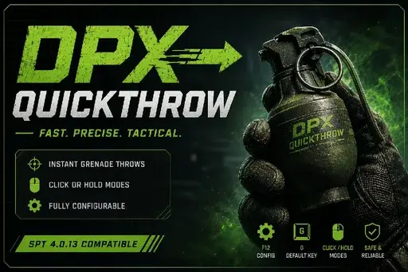

DPX-QuickThrow-V1
- Downloads
- 1,389
- Favourites
- 18
- Mod lists
- 11
DPX-QuickThrow
Check version to see update
DPX-QuickThrow is a configurable grenade quick-throw system for SPT 4.0.13.
It allows you to customize how grenades behave, with support for Click and Hold activation modes, configurable activation behavior, custom keybinds, adjustable hold duration, and optional fallback to vanilla grenade handling.
Features
- Click or Hold activation modes
- Arm grenade before throwing
- Instant throw option
- Configurable hotkeys
- Adjustable hold duration
- F12 configuration menu
- Vanilla fallback option
- Lightweight and SPT 4.0.13 focused
Installation
Extract the archive into your SPT installation folder.
Compatibility
Tested and developed for SPT 4.0.13.
Feedback
This is my first public SPT mod.
If you encounter bugs, unexpected behavior, compatibility issues, or have suggestions for improvements, please leave a comment. I’ll be actively monitoring feedback and will do my best to fix issues and improve the mod whenever possible.
Thanks for trying DPX-QuickThrow, and enjoy your raids!
Version
1.1.0
DPX-QuickThrow v1.1.0
Fixed
- Fixed grenade trajectory inconsistencies from early releases.
- Fixed activation while moving.
- Improved Hold mode reliability.
- Added pending throw protection.
- Added SetInHands timeout protection.
Changed
- Added Press activation mode.
- Removed redundant Click mode and migrated it to Press.
- Improved input handling.
- Cleaned release logging.
Notes
- Compatible with SPT 4.0.13.
- Press mode is recommended.
- Avoid binding DPX-QuickThrow to the same key as THE CITY’s vanilla grenade throw.
- Throw timing may be slightly slower than v1.0.0, but is more reliable.
Version
1.0.0
Initial public release.
Features:
- Click and Hold activation modes
- Configurable grenade keybind
- Arm grenade before throw
- Instant throw option
- Adjustable hold duration
- F12 configuration menu
- Vanilla fallback support
Tested on SPT 4.0.13.